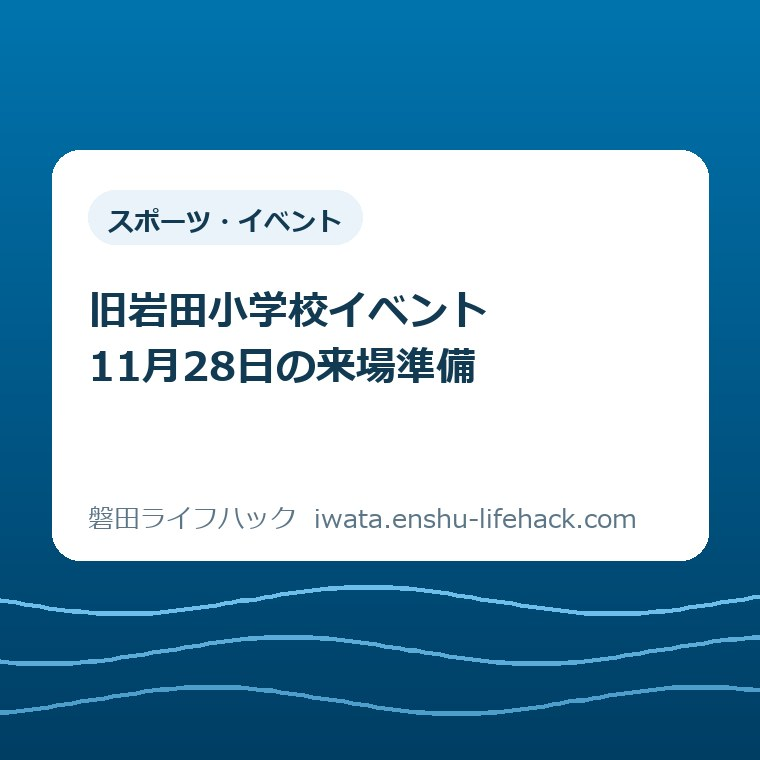

スポーツ・イベント
旧岩田小学校イベント｜11月28日の来場準備

この記事の要点
Q. 旧岩田小学校のイベントは、予約や持ち物が必要？
A. 2026年11月28日10～17時、匂坂中987番地の旧岩田小学校で開催。入場無料・申込不要ですが、一部の体験・販売は有料です。校舎に入る方は上履きを持参し、個別体験の条件は市公式で確認してください。
家族が会場に着くまでにも、仕事がある
参加できる体験や必要な配慮は、年齢や個別の条件によって変わります。入場の案内だけで、すべての体験に参加できるとは判断できません。その線を先に引いたうえで、11月28日の旧岩田小学校イベントへ出かける準備を整理します。
休日の催しに出かけるには、家族の予定を合わせ、送迎する人を決め、食事や着替えも用意します。学校や地域の情報を調べるだけでも時間がかかります。入場料がかからない日でも、家を出るまでの手間まで無料になるわけではありません。
私は大石浩之（磐田市／不動産業）です。地域の建物の話をするときも、まず利用する人の一日の段取りから考えたいと思っています。この記事では、学校の将来像を論じるより先に、11月28日に何を持ち、どこへ行くのかを整理します。
読み終えた後にすることは、一つです。市の公式案内を開き、家族が訪ねられそうな時間帯を一つ確かめる。すべての体験を選んだり、その場で予定を確定したりするところまでは求めません。まだ決まらない用事があれば、候補のまま残せます。
11月28日、会場は匂坂中の旧岩田小学校
磐田市の「旧岩田小学校の利活用」は、2026年11月5日更新の開催概要で、「つながる・ひらく 岩田」を11月28日土曜日の午前10時から午後5時までと案内しています。午前9時50分から開会セレモニーを行う記載もあります。イベント本体の開始時刻とは分けて読んでください。
会場は旧岩田小学校、住所は磐田市匂坂中987番地です。施設名の「岩田」と自治体名の「磐田」は漢字が異なります。検索や家族への連絡では、旧岩田小学校という名前に住所を添えると、同じ場所を確かめやすくなります。
磐田市の別の公式資料「向陽学府小中一体校」では、岩田小学校・大藤小学校・向笠小学校が2026年3月に閉校したことを説明しています。4月には向陽小学校が開校し、向陽中学校と同じ校舎で小中一体校となりました。これは学校の経緯を確認する資料です。
今回のイベントの行き先は、新しく開校した学校ではありません。家族の地図アプリに学校名だけを入れる前に、イベントの公式案内の住所と照らしてください。通学先を調べたときの情報や、以前保存した別施設の地図を、そのまま来場案内に使わないためです。
主催として、市は岩田地域づくり協議会、磐田市、Amame Associate Japan株式会社で構成する実行委員会を挙げています。地域の学校を使った行事ですが、この記事は主催者の案内ではありません。変更があった場合には、市の公式ページの記載が判断の基準になります。
入場無料と、体験にかかるお金を分ける
開催概要では、入場は無料で、申込みも不要とされています。一方、一部に有料の体験や販売があるとも明記されています。「入れるか」という問いと、「会場で何をするといくら払うか」という問いには、別々の答えがあるということです。
意外に感じる方もいるかもしれませんが、無料イベントという短い紹介だけでは、家族の支出は決まりません。私は、入場料がゼロでも、体験や飲食に使うお金は別に考えます。参加する人数だけで一日の費用を計算できる催しとは、予定の作り方が違います。
個々の出展の料金、支払い方法、予約の有無、年齢条件は、この記事で一律に確認できていません。入場の申込みが要らないことを、すべてのブースに予約が要らないという意味へ広げないでください。目当ての体験があれば、その条件を市の案内や問い合わせ先で確かめます。
私なら、家族のメモを「入場料」「やってみたい体験」「飲食」に分けます。金額がまだ分からない欄は空欄のままで構いません。分からない費用を勝手な相場で埋めるより、何の料金を聞きたいのかが見えるほうが、問い合わせもしやすくなります。
何も買わずに見学できる範囲と、参加費が必要な体験を分けて読む姿勢は、会場で慌てないための準備です。子どもには、興味を持ったものを全部選ぶ約束をする前に、当日の案内を一緒に見ようと伝える。これは市が定めたルールではなく、私からの家計上の提案です。

校舎へ入る方は上履き、ごみは持ち帰る
市の「ご来場の際のお願い」には、校舎へ入る際は上履きを持参するよう記載されています。学校探検を楽しみにしていても、足元の準備が抜けると困ります。体育館の体験で何を履くかとは別に、まず校舎に入るための持ち物として確認しておきたい部分です。
ごみは持ち帰るよう求められています。キッチンカーや飲食の案内があることと、ごみを会場で捨てられることは同じではありません。私なら、買ったものを持ち帰る袋とは別に、ごみを入れて持ち帰るための袋を荷物に加えます。
履いてきた靴をどのように持つかも、家族で考えておくと動きやすくなります。靴袋は市が必須品として挙げたものではなく、この記事からの提案です。上履きを用意した人が、きょうだいの分や付き添う大人の分まで確認できたか、出発前に一度見ます。
私は、持ち物を増やしすぎることにも迷いがあります。荷物が多ければ安心とは限らず、歩く人や子どもの手を引く人に負担が集まることも考えられます。まず公式に求められた上履きと、ごみを持ち帰る準備を優先し、後は家族に必要なものを足す順番がよいと考えます。
ベビーカーの扱い、授乳やおむつ替えの場所、貸出用の上履きの有無は未確認です。学校の建物だから用意されているはず、と記事から補うことはできません。設備があることを前提に予定を作る必要があるご家庭は、来場前に市へ具体的に尋ねてください。
市は記録・広報のために会場で撮影を行うと案内しています。写りたくない方はスタッフへ申し出るよう記載があります。写真が気になるご家族は、その案内も事前に共有してください。撮影の範囲や個別対応の詳細は、この記事では確認できていません。
駐車場と、移動に必要な配慮を確かめる
市は、無料駐車場として土グラウンドを案内しています。同時に、乗り合わせや徒歩・自転車での来場への協力も呼びかけています。無料という情報だけで、希望する時刻に必ず駐車できるとまでは判断できません。駐車可能台数や当日の満車状況は未確認です。
私なら、送迎する人と一緒に住所を開き、現地へ向かう方法と帰る方法を同じメモに書きます。送る人と迎えに来る人が違う場合は、旧岩田小学校という会場名も揃えます。正門の位置や車の出入口は、当日の主催者の誘導や公式案内に従ってください。
雨天時の開催方法や駐車場の運用について、11月5日更新の案内からは確定した扱いを示せていません。晴れている日の地面の状態や、雨の後も駐車できるかを推測で案内しません。天候に左右されるご家庭は、出発前に市の更新情報を確認する必要があります。
段差、トイレの位置、車いすでの移動、介助する人の動きも、今回の公表内容だけでは判断できません。「学校探検がある」という案内は、すべての来場者がすべての場所を通れる保証ではありません。必要な配慮があるときは、使いたい場所や体験名を具体的に伝えて相談します。
近所の公園で遊ぶ日とは、使う建物も持ち物も違います。公園を候補に残したい家族には、別記事の竜洋十束公園の遊具と来場前の確認もあります。ただし、公園の記事の駐車場や設備情報を旧岩田小学校へ当てはめないでください。
学校探検と体験は、興味を一つ選ぶところから
市は、学校探検・思い出めぐり、体験プログラム、ワークショップ、キッチンカー・飲食を案内しています。思い出の場所や普段入れない教室を巡る企画には、一部立入禁止の区域もあります。懐かしい教室を目指す場合も、当日入れる範囲で楽しむ行事として読んでください。
出展内容にはサッカー体験、ピックルボール、親子あそび、ドローン体験、消防車の展示などが挙げられています。ただし、一覧に名前があることは、開催時間中ならいつでも、どの年齢でも参加できるという意味ではありません。内容は変更の場合があるとも記載されています。
ピックルボールに関心があっても、10月31日の小学生向け体験会を紹介した記事とは別の催しです。以前の会場、学年の条件、募集人数、申込方法を、今回の出展へ移してはいけません。競技名が同じでも、参加条件は行事ごとに確認します。
ワークショップは、岩田地区の未来を話し合い考える企画として紹介されていますが、11月5日更新時点の開催時間は調整中です。参加したい方は、午前か午後かをこの記事から決めず、市の案内に時間が追加されたかを確かめてください。
私なら、学校を見たい人と体を動かしたい人がいる家族では、最初に「これだけは見たい」を一人一つ聞きます。すべてを回る予定を作るより、候補が重なる場所を探すためです。実際の滞在時間や回れる数は、当日の内容と家族の体調を見て決めます。
良い点――申し込む前の負担を小さくできる
私が良いと考えるのは、入場そのものに申込みを求めず、学校を訪ねる入口を設けていることです。予定が先まで固まりにくい家庭でも、まず場所と時間を確かめるところから考えられます。これは個別体験の受付条件とは分けたうえでの、私の評価です。
思い出めぐりと体験の両方が案内されている点も、家族で出かける理由を合わせやすいと感じます。卒業生の思い出と、子どもの遊びたい気持ちは同じではありません。一緒に訪ねた人が、それぞれ見たいものを選べる余地があるのはよい点だと考えます。
来場者アンケートを今後の活用の検討へ生かすと示している点にも意味があります。私は、建物を使う人の移動や休憩のしやすさが、意見として届く機会になればよいと思います。これは利用者の声が必ず実現するという説明ではなく、使う側として寄せる期待です。
注文したい点――体験ごとの条件が見えると助かる
私が注文したいのは、体験ごとの料金、対象年齢、受付時刻が一覧で分かる形です。楽しそうな企画が多いほど、家族は比較に時間を使います。会場へ行ってから参加できないと分かる負担を減らすために、個別の条件が先に見えると助かります。
特に、入場の申込不要という大きな表示と、個々の体験の受付方法の違いは、同じ画面で確かめられると親切だと思います。現時点で未確認の条件を、実際には用意されていないと断定するつもりはありません。公表が進むときに、見つけやすくしてほしいという注文です。
一方で、準備する地域の方や出展する事業者にも、時間や人手の負担があります。この記事に欲しい情報が全部そろわないことを、そのまま運営の不足と決めつけるのは違うと考えます。問い合わせる側も、聞きたい体験や必要な配慮を一つに絞って伝える工夫ができます。

家族の予定メモは、空欄があっても使える
私から提案する予定メモは、「会場の住所」「行けそうな時間帯」「気になる体験」「まだ聞きたいこと」の四つです。市が配る申込書ではありません。家族の連絡用に短く書けばよく、未定の欄を無理に埋める必要はありません。
たとえば、午前に別の用事がある家庭なら、午後に行けるかを候補として共有できます。ただし、その時間に希望の体験があるとはまだ限りません。予定メモの時間と、主催者が公表した各企画の時間が合うかを照合して初めて、具体的な行き方が決まります。
問い合わせる場合は、「家族で行けますか」だけでなく、「この体験にこの年齢の子どもが参加できるか」「介助が必要な人とこの場所へ行けるか」と尋ねるほうが答えを受け取りやすくなります。これは回答を保証する方法ではなく、確認したい条件を揃えるための提案です。
家族で現地を確かめるためのメモという考え方は、いわたの暮らし体験ツアーの記事でも整理しています。ただし、あちらは移住体験の別企画です。今回の行事に移住の申込条件や費用の扱いを持ち込まず、メモの作り方だけを参考にしてください。
対案・結論――今日は訪問できそうな時間を一つ確認する
今日の一歩は、市公式の開催案内を開き、家族が訪問できそうな時間帯を一つ確かめることです。その際、11月28日土曜日、匂坂中987番地、午前10時から午後5時という三つを同じ画面で見ます。訪問時間は、希望する企画の案内が更新されたら調整できます。
送迎する人、付き添う人、上履きを用意する人が別なら、同じ公式URLを共有すると伝言のずれを減らせます。画像で切り取った案内だけでは、後から加わった条件が見えません。私は、準備の中心に置くのは元のページへのリンクがよいと考えます。
当日朝にも、開催内容や天候に関する追加案内を確認してください。これは毎日見張るという意味ではなく、家を出る判断に使う情報を最後に揃えるためです。詳細が分からない体験だけが目的なら、その条件を確認してから来場するほうが家族の時間を使いやすくなります。
大石の視点――建物の広さより、家族が使える時間を見る
私は不動産業に関わる者として、建物が残ることと、家族が使えることの間には段取りがあると考えます。開いている時間に行けるか、付き添いが必要か、上履きを運べるか。来場準備の小さな条件が、利用するかどうかの判断を左右します。
今回の行事で、旧校舎の恒常的な利用が決まったわけではありません。市は活用を考える実証実験と説明しています。私は、将来の施設像を早く決めるより、今回使ってみた人の具体的な不便や楽しさが集まることに期待します。これは私の見解で、公的な決定ではありません。
だからこそ、家族に丸一日の参加を求めたくはありません。短く見学したい人にも、思い出を確かめたい人にも、それぞれ事情があります。行くと決める前の材料を揃え、行く場合には無理の少ない時間を選ぶ。その準備を助けることが、この記事の役割だと思っています。
よくある質問
予約なしで入れますか。
市の開催概要では、入場無料・申込不要です。ただし一部の体験や販売は有料です。入場の条件だけで各体験の予約、受付時刻、対象年齢までは判断できません。目当ての企画がある場合は、市公式の最新案内で個別条件を確認してください。
上履きは必要ですか。
市は校舎に入る際の上履き持参を案内しています。家族で校舎内を巡る予定なら、付き添いの方の分も含めて用意してください。貸出品の有無は未確認です。ごみの持ち帰りも求められているため、私は持ち帰り用の袋も準備することを提案します。
会場は現在の向陽小学校と同じ場所ですか。
開催案内の会場は旧岩田小学校、磐田市匂坂中987番地です。岩田小学校は2026年3月に閉校しました。新しく開校した向陽小学校の案内と混同せず、イベントの市公式ページに載っている旧校の住所を地図と照合してください。
制度や参加条件、設備の利用可否は個別の事情で変わり、開催内容も変更される場合があります。最後は必ず磐田市公式の開催案内で最新情報を確認してください。この記事の確認日は2026年11月7日です。
参考にした公式情報
- 旧岩田小学校の利活用／磐田市（開催概要・当日の内容・ご来場の際のお願い、2026年11月7日確認）
- 向陽学府小中一体校／磐田市（閉校の経緯、2026年11月7日確認）
最終確認日：2026-11-07 ／ 本記事は公表情報と執筆者の見解を分けて記載しています。制度・数値・公開状況は変更される場合があるため、最新情報は磐田市公式ページでご確認ください。

大石浩之／磐田市／不動産業・宅地建物取引士